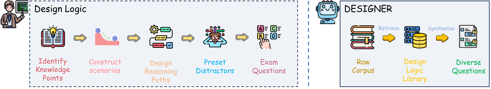

DESIGNER: Design-Logic-Guided Multidisciplinary
Data Synthesis for LLM Reasoning
Abstract
Large language models (LLMs) have achieved remarkable success in many natural language tasks but still struggle with complex, multi-step reasoning, particularly across diverse disciplines. Existing reasoning datasets often lack disciplinary breadth, reasoning depth, and diversity, and lack guiding principles for question synthesis. We propose DESIGNER: a DESIGN-logic-guidEd Reasoning data synthesis pipeline that leverages naturally available, extensive raw documents (e.g., book corpus and web corpus) to generate multidisciplinary challenging questions. We introduce the concept of "design logic" and instruct LLMs to mimic human educators' question-creation process, enabling automated synthesis of large-scale, high-difficulty questions. We use LLMs to reverse-engineer and abstract over 120,000 design logics from existing questions across various disciplines. By matching these design logics with source documents, we are able to create reasoning questions that far surpass the difficulty and diversity of existing datasets. Using this pipeline, we synthesized two large-scale reasoning datasets that span 75 disciplines: DLR-Book (3.04 million questions from the book corpus) and DLR-Web (1.66 million questions from the web corpus). Data analysis indicates that the questions synthesized by our method exhibit greater difficulty and diversity compared to those in the baseline datasets. We validate our synthesized data through supervised fine-tuning (SFT) on the Qwen3 and Llama3 model families. Our data substantially enhances their multidisciplinary reasoning capabilities, outperforming existing datasets. Notably, after SFT on our datasets, the base versions of these models even surpass their official instruction-tuned counterparts.
The DESIGNER Pipeline
Left: the structured process by which human educators transform knowledge into complex questions. Right: Our method, DESIGNER, emulates this process to synthesize diverse and multidisciplinary questions.
We propose DESIGNER: a DESIGN-logic-guidEd Reasoning data synthesis pipeline that leverages large-scale, multidisciplinary raw documents (book and web corpora) to synthesize challenging questions across diverse disciplines. The central insight is the notion of Design Logic, which encapsulates how human experts transform knowledge into complex, reasoning-intensive exam questions. This meta-knowledge guides our synthesis.
The pipeline comprises three phases. (1) Data curation: we process large-scale book and web corpora with multi-dimensional labeling and filtering (discipline, readability, educational value, reasoning depth) to construct a high-quality source library. From a question bank of hundreds of millions, we cluster and sample a diverse set of difficult questions, from which an LLM reverse-engineers and abstracts over 120K structured design logics to construct a reusable design logic library. (2) Core synthesis: we adopt a two-stage retrieve-and-generate mechanism, in which vector similarity retrieves coarse candidate logics for each source document and an LLM performs fine-grained selection and synthesizes a graduate-level reasoning question by strictly following the logic's steps. (3) Filtering and output: we perform MinHash deduplication and 13-gram decontamination against benchmarks. Finally, we synthesize long CoT responses to form high-quality question–response pairs for supervised fine-tuning (SFT).
Overview of the design logic concept and the three-phase DESIGNER pipeline.
Data Analysis
Difficulty
Using a uniform difficulty labeling procedure, our datasets are markedly harder than baselines. The proportion of "Very Hard" questions is substantially higher than in all baseline datasets and benchmarks, while the proportion of "Easy" questions is negligible (0.72% in DLR-Web; 0.27% in DLR-Book).

Diversity
Embedding-space diversity metrics computed on 300K sampled questions per dataset show consistently higher diversity for our data across Mean Cosine Distance, Mean L2 Distance, 1-NN Distance, Cluster Inertia, and Radius. DLR-Web and DLR-Book exceed baselines, with ~2× gains on 1-NN distance.
Disciplinary Distribution
Compared to existing multidisciplinary datasets that are skewed toward a few disciplines (e.g., mathematics), DLR-Book and DLR-Web provide a balanced, comprehensive coverage across 75 disciplines. Among them, only the Nemotron-Post-Training-v1 dataset exhibits a distribution comparable to ours, but its question difficulty and reasoning depth are substantially lower.
Experiments
We conduct SFT on base models from the Qwen3 and Llama3 series with DLR-Book, DLR-Web, and their combination, and evaluate under zero-shot settings on widely used reasoning benchmarks.
Supervised Fine-Tuning (SFT) Experiments
We performed SFT on base models from the Qwen3 and Llama3 series using our synthetic datasets (DLR-Book, DLR-Web, and their combination) and compared the resulting models against their official instruction-tuned counterparts under a consistent zero-shot evaluation setting. The results indicate that our synthetic data yields substantial improvements without inducing overfitting to any particular benchmark; instead, it enhances the model's general and robust reasoning capabilities.
Comparison with baselines
On Qwen3-8B-Base, models trained on our data surpass those trained on OpenThoughts3, Nemotron-Post-Training-v1, WebInstruct (Full), and NaturalReasoning across benchmarks. DLR-Book attains the best MMLU, MMLU-Pro, and GPQA-Diamond, while DLR-Web achieves the best SuperGPQA.

Scaling law
Training on increasingly larger subsets sampled from DLR-Book yields consistent gains across all benchmarks, confirming positive data-scaling trends. The observed scaling laws confirm that our method provides a reliable pathway to achieving superior model performance by synthesizing more data. Future work can leverage our proposed design logics to synthesize even larger datasets for continued improvement.
Effect of source corpus quality
Fine-tuning on book-synthesized data consistently outperforms web-synthesized data on most benchmarks (with the largest gains on GPQA-Diamond and SuperGPQA). Nevertheless, the performance gap between the two corpora is modest, demonstrating our method's robustness to source quality variations and its effectiveness at generating high-quality questions even from lower-quality corpora.
Ablation studies
Removing explicit design logics or the coarse/fine ranking stages degrades performance; the complete DESIGNER pipeline performs best across benchmarks.
Reference
If you find our method or datasets useful, please cite our paper:
@article{liu2025designer,
title={DESIGNER: Design-Logic-Guided Multidisciplinary Data Synthesis for LLM Reasoning},
author={Liu, Weize and Zhao, Yongchi and Luo, Yijia and Xu, Mingyu and Liu, Jiaheng and Li, Yanan and Hu, Xiguo and Bai, Zhiqi and Xu, Yuchi and Su, Wenbo and others},
journal={arXiv preprint arXiv:2508.12726},
year={2025}
}